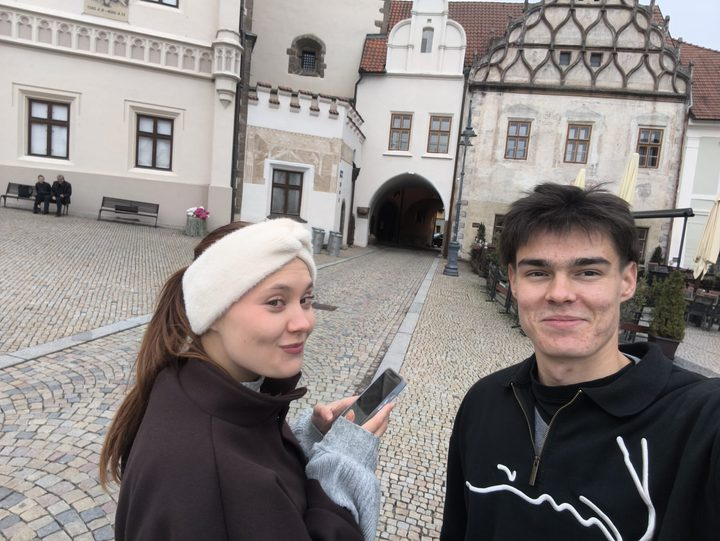

Tábor · venkovní úniková hra
Žižka se v poledne žení.
A je pryč.
Najděte ho. Město je herní deska, mobil vás vede.
Hrát- 1–6 lidí
- jeden mobil
- 9 míst
- 60–90 min
- bez aplikace
Jak to jde


 ✓ VYŘEŠENO+ groše do kasy
✓ VYŘEŠENO+ groše do kasy
posuňte prstem →
Nevěsta píše
Takhle hra začíná. Odpovězte jí.
Takhle to vypadá
Hra v číslech
Co v noci vyváděl?
Každá hádanka odemkne kus jeho noci.


Pro koho?
- 🎉Parta
- 💍Rozlučka
- ❤️Rande
- 🧭Výlet do Tábora
Hrát
za celou partu · zaváděcí cena
První party hrají zdarma. Na konci jen tři kliky v dotazníku.
Napište nám a dáme vědět, až hra vyjde.
- Hrajete hned, bez aplikace
- Kdykoli za světla, bez rezervace
- Peníze zpět, když hra nefunguje
Máte kód od kamarádů? Zadáte ho při platbě.
Zaplacením souhlasíte s obchodními podmínkami a s tím, že přístup ke hře dostanete okamžitě. Tím ztrácíte právo odstoupit od smlouvy do 14 dnů. Když hra nefunguje, peníze vrátíme.
Hra je venkovní. Hrajete na vlastní odpovědnost, podle pravidel hry.
Start: kašna na Žižkově náměstí
Otázky
Nejsem z Tábora. Zvládnu to?
Ano. Chat vás vede od místa k místu. Start je u kašny na Žižkově náměstí, 20 minut pěšky od nádraží.
Co když se zasekneme?
Na každém místě jsou nápovědy. Ta poslední řekne řešení.
Kolik nás může být?
1–6 lidí na jeden mobil. Větší parta se rozdělí na dvě a soutěží.
Co když prší?
Hraje se venku. Když leje, přerušte to. Hra si pamatuje, kde jste.
Dá se hrát po tmě?
Radši ne, hádanky jsou na fasádách. V listopadu vyrazte nejpozději ve tři.
Bude signál?
Otevřete hru doma na wifi (asi 4 MB). Pak jde dohrát i bez signálu.
Musíme pít?
Ne. Ve hře se pije jen voda z pítka.
Můžou hrát děti?
Humor je pro 15+. Rodinnou verzi zatím nemáme.
Je trasa bezbariérová?
Není. Je na ní kopec k Jordánu a úzká ulička.
Jak dlouho přístup platí?
12 měsíců od zaplacení, jedna hra pro jednu partu.
Je tu žebříček?
Ano. Pošlete nám kartu z konce hry a zapíšeme vaši rotu.

Kdo za tím stojí
Vymyslel jsem to pro Tábor, ať lidi nesedí doma u mobilu. Hraju to s vámi a ladím podle vás. Vasilij